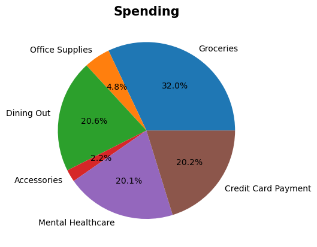

Python Code#
import csv
import pandas as pd
import datetime
import matplotlib.pyplot as plt
def process_csv(file):
df = pd.read_csv(file) # load the .csv and converts it into a DataFrame
df = df.iloc[:, 0:4] # in case the .csv has more than four columns, the program is hardcoded to chop it down into four
df = df.dropna() # in case there are extra rows in the DataFrame, this removes them
df['Amount'] = df['Amount'].astype(float) # formats the 'Amount' column as floats
for cell in range(len(df['Date'])):
current_cell = df.loc[cell, 'Date']
# print(current_cell)
if len(current_cell) == 5:
current_cell = pd.to_datetime(df.loc[cell, 'Date'] + '/2025') # currently is hardcoded to add the year 2025 to the date
current_cell = current_cell.strftime("%x") # format the dates to be MM/DD/YY
# current_cell = pd.to_datetime(current_cell) # uncomment this line to convert to DateTime format
df.loc[cell, 'Date'] = current_cell
else:
current_cell = pd.to_datetime(df.loc[cell, 'Date'])
current_cell = current_cell.strftime("%x")
df.loc[cell, 'Date'] = current_cell
return df
def combine_slices(input_df):
combined_data = {}
for idx in range(len(input_df.iloc[:, 2])):
current_category = input_df.iloc[idx, 2]
if current_category not in combined_data:
amount_list = 0
combined_data[current_category] = amount_list
# amount_list.append(pos_df.iloc[idx,3])
for key in combined_data:
if key == current_category:
combined_data[current_category] += input_df.iloc[idx,3]
merged_values = combined_data.values()
merged_labels = combined_data.keys()
return combined_data
new_file = input("Welcome! Please input the file name(must be .csv) you'd like to analyze: ")
current_df = process_csv(new_file)
add_new = True
while add_new:
add_true = input("Add another file(y/n)?")
if add_true == 'y':
combine_df = process_csv(input("Enter a .csv file:"))
combined_df = combine_df.merge(current_df, how = 'outer')
current_df = combined_df.copy()
add_true = input("Add another file(y/n)?")
if add_true == 'n':
add_new = False
combined_df = current_df
current_df = combined_df
repeat = True
while repeat:
flow = input("Would you like to look at spending(s) or income(i)?")
if flow == "i":
current_df = current_df[current_df['Amount'] > 0]
repeat = False
flow_name = "Income"
elif flow == "s":
current_df.loc[:, "Amount"] = -1 * current_df.loc[:, "Amount"]
# current_df = df.reset_index()
# current_df = current_df.iloc[:, 1:]
current_df = current_df[current_df['Amount'] > 0]
flow_name = "Spending"
repeat = False
else:
print("Invalid input, dude!")
current_df = current_df.reset_index()
current_df = current_df.iloc[:, 1:]
filter_more_categories_valid = True
while filter_more_categories_valid == True:
date_range_valid = input("Would you like to filter out a category(y/n)? \
This question will repeat if you type 'y' and give an input to the next question:")
if date_range_valid == 'y':
filtered_category = input("Enter the category you want to filter out:")
fresh_df = []
for cell in range(len(current_df)):
if current_df.loc[cell, 'Category'] != filtered_category:
current_cell = current_df.loc[cell, 'Category']
fresh_df.append(current_df.loc[cell])
fresh_df = pd.DataFrame(fresh_df)
continue
current_df = fresh_df
elif date_range_valid == 'n':
filter_more_categories_valid = False
else:
print("Invalid input!")
continue
current_df = fresh_df
current_df = pd.DataFrame(current_df)
current_df = current_df.reset_index()
current_df = current_df.iloc[:, 1:]
date_range_valid = False
while date_range_valid == False:
date_range_valid = input("Would you like to set a date range(y/n)? ")
if date_range_valid == 'y':
min_date = input('Enter the minimum date you want to filter your data(MM/DD/YYYY):')
max_date = input('Enter the maximum date you want to filter your data(MM/DD/YYYY:')
max_date = pd.to_datetime(max_date)
min_date = pd.to_datetime(min_date)
current_df = current_df[min_date <= pd.to_datetime(current_df['Date'], format = 'mixed')]
current_df = current_df[max_date >= pd.to_datetime(current_df['Date'], format = 'mixed')]
dict_here = combine_slices(current_df)
print()
plt.pie(dict_here.values(), labels=dict_here.keys(), autopct='%1.1f%%')
plt.title(flow_name, fontsize=15, fontweight='bold')
plt.show()
print()
empty_df_for_format = pd.DataFrame({
"Amount": ['-'],
"Category": ['-'],
"Description": ['-'],
"Date": ['-']
})
summed_df = pd.DataFrame({
"Category": dict_here.keys(),
"Amount": dict_here.values()
})
df_list = [current_df,empty_df_for_format, summed_df]
current_df = pd.concat(df_list)
current_df = current_df.reset_index()
current_df = current_df.iloc[:, 1:]
current_df
Welcome! Please input the file name(must be .csv) you'd like to analyze: Sheet1.csv
Add another file(y/n)? y
Enter a .csv file: testing.csv
Add another file(y/n)? n
Would you like to look at spending(s) or income(i)? s
Would you like to filter out a category(y/n)? This question will repeat if you type 'y' and give an input to the next question: y
Enter the category you want to filter out: Rent
Would you like to filter out a category(y/n)? This question will repeat if you type 'y' and give an input to the next question: n
Would you like to set a date range(y/n)? n

| Date | Description | Category | Amount | |
|---|---|---|---|---|
| 0 | 03/29/25 | EXEMPLAR E DREAMER 1234 WOODER SAM S #421 GEOR... | Groceries | 11.07 |
| 1 | 03/29/25 | TARGET | Office Supplies | 4.58 |
| 2 | 03/30/25 | UI CHAMPAG STAT CENTR GEORGIA ST | Dining Out | 10.5 |
| 3 | 04/04/25 | UI SYDNEY DINING GEORGIA ST | Dining Out | 13.4 |
| 4 | 04/05/25 | 04/05 POS 1765:PURCHASE 04/05/25 ... | Groceries | 83.09 |
| 5 | 04/07/25 | WINTR BAR WHITE RESTAURAN GEORGIA ST | Dining Out | 33.04 |
| 6 | 04/10/25 | BEACHY DIAMO INC GEORGIA ST | Accessories | 10.5 |
| 7 | 04/11/25 | UI CHAMPAG STAT CENTR GEORGIA ST | Dining Out | 11.55 |
| 8 | 04/15/25 | ALEC'S EMPANADA CHASAS GEORGIA ST | Dining Out | 18.43 |
| 9 | 04/18/25 | 04/18 DEBITCARD 1845:PURCHASE GEASGFD.CO NY | Mental Healthcare | 94.09 |
| 10 | 04/21/25 | 04/21 Web Branch:UWCU VISA PAYMENT XX-7786 | Credit Card Payment | 94.64 |
| 11 | 04/21/25 | TARGET | Office Supplies | 17.86 |
| 12 | 04/25/25 | 04/25 POS 1845:PURCHASE 04/25/25 ... | Groceries | 55.85 |
| 13 | 04/29/25 | 04/29 DEBITCARD 1832:PURCHASE Georgia | Dining Out | 9.5 |
| 14 | - | - | - | - |
| 15 | NaN | NaN | Groceries | 150.01 |
| 16 | NaN | NaN | Office Supplies | 22.44 |
| 17 | NaN | NaN | Dining Out | 96.42 |
| 18 | NaN | NaN | Accessories | 10.5 |
| 19 | NaN | NaN | Mental Healthcare | 94.09 |
| 20 | NaN | NaN | Credit Card Payment | 94.64 |